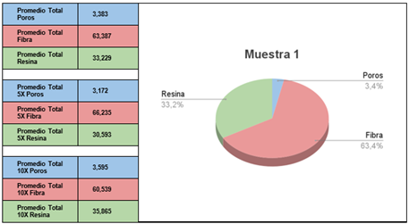
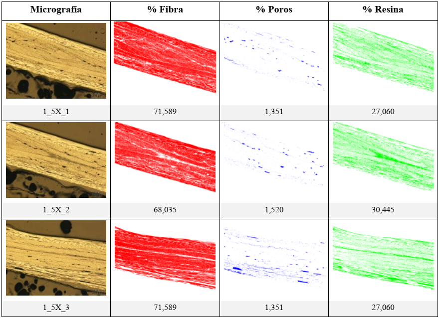
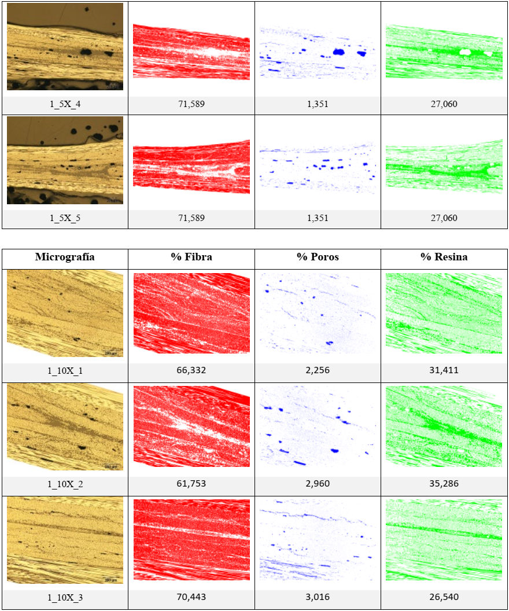
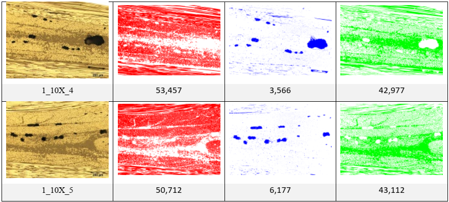
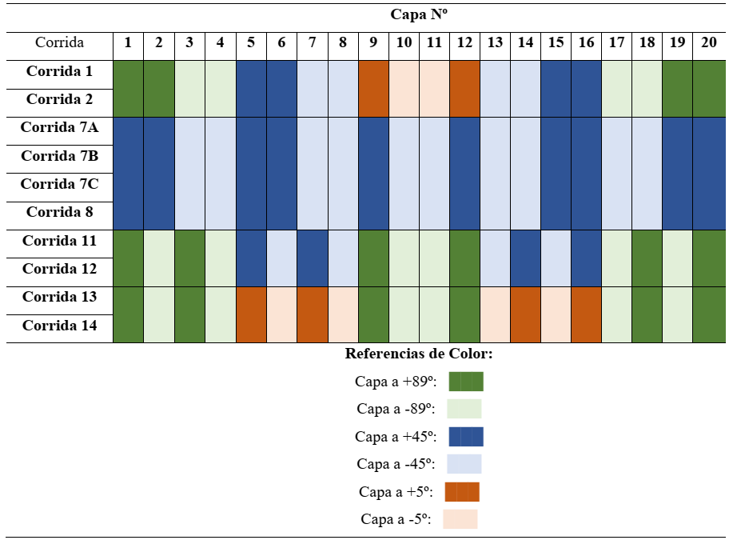

Capítulo 4: Resultados.
En este capítulo se presentan los siguientes resultados de cada corrida de los tubos, definida según el DOE de la Tabla 3.2:
- Fracción en volumen de las fibras y poros1 .
- Constantes ingenieriles de cada tubo.
- Deformaciones residuales (DR).
- TR calculadas a partir de ecuaciones
de elasticidad.
- TR predichas mediante la TCL.
- TR predichas según el modelo de
elementos finitos planteado.
- Carreras máximas y Tensiones máximas según el estándar ASTM D 2290.
4.1 Fracción en volumen de fibra, resina y poros de las micrografías.
Se muestra como ejemplo el análisis micrográfico de la corrida 1 en la Tabla
4.1. Como se puede ver, el análisis
más detallado de cada micrografía es extremadamente extenso. Por cuestiones de legibilidad del documento (45 páginas
de micrografías), el análisis micrográfico de cada corrida se encuentra en el Anexo 5.
Tabla 4.1: Fracción en volumen de Fibra, Resina y Poros de la
Muestra 1.




El resumen de la fracción en volumen de fibra, resina y poros para cada muestra se muestra en la Tabla 4.2.
Tabla 4.2: Fracción en volumen de Fibra, Resina y Poros de las
muestras.
| Muestra |
%Poros |
%Fibra |
%Resina |
| 1 |
3,38 |
63,39 |
33,23 |
| 2 |
9,00 |
56,96 |
34,04 |
| 7A |
5,01 |
55,08 |
39,92 |
| 7B |
5,83 |
53,37 |
40,81 |
| 7C |
2,77 |
69,39 |
27,85 |
| 8 |
2,44 |
61,62 |
35,94 |
| 11 |
12,78 |
55,83 |
31,42 |
| 12 |
3,12 |
66,51 |
30,37 |
| 13 |
5,94 |
57,81 |
36,25 |
| 14 |
4,92 |
67,51 |
27,57 |
Teniendo en cuenta la totalidad de los tubos pertenecientes a la Corrida 7, el promedio de poros, fibra y resina es
de 4,54%, 59,28% y 36,19% respectivamente, siendo el desvío estándar esperable de 1,58%, 8,80% y 7,24%.
Resultados cualitativos de las micrografías.
Se presentan a continuación algunas observaciones personales del autor del presente trabajo en base a la
observación de algunas de las micrografías.
- En general, se observan grietas en aquellos patrones en los que presentaban una capa con ángulos de ±5º. Véase
la Figura 4.1. En ella se resumen algunas micrografías. Hubo algunas micrografías que
presentaban grietas en otros
lados, pero se cree que estas se producen por el procesamiento de las muestras previo al análisis micrográfico. En
cambio, en las muestras que tenían capas a ±5º, estas grietas se presentaron en todos los casos. Véase el Anexo 5
si se quiere profundizar en este aspecto. El autor cree que, dado la dificultad para conseguir patrones prolijos
de ±5º, se deben realizar patrones de ángulos bajos más repetibles como en ±10º y ±15º para trabajos futuros.
- Los defectos (poros) en las capas con ángulos a ±89º en general son más alargados que los defectos con ángulos
de ±45º y ±5º. En la Figura
4.2 se ve que los defectos de las capas de ángulos bajos son muy alargados (en las
corridas 1, 13 y 14). En la Corrida 7A que presenta todas capas de ángulos a ±45º, se ve que la morfología de los
poros es redondeada, lo cuál permite distinguir fácilmente en las otras micrografías cuando un defecto es de una
capa de ±89, dado que estas son más oblongas.
- Hubo dos corridas excepcionales en cuanto a la cantidad de defectos: la Corrida 2 (9%) y la Corrida 11 (12,78%).
Se estima que la Corrida 2 presenta estos defectos por la mencionada falta de cohesión en las capas con ángulos
bajos. De la Corrida 11 se desconoce por qué surgieron tal tamaño y abundancia en los defectos. Véase la Figura 4.3.

Figura 4.1: Grietas en las regiones con capas de ±5º.
Micrografías en donde se observan grietas en las regiones con capas de ±5º.

Figura 4.2:Diferencia de morfología de los poros en las diferentes capas.

Figura 4.3: Defectos en la Corrida 11.
4.2 Constantes ingenieriles de cada tubo.
En base a los resultados de la Tabla
4.2, se pueden determinar las propiedades micromecánicas de los laminados
unidireccionales en base a su contenido de fibra y resina. Esto se hace teniendo en cuenta las fórmulas
micromecánicas del Capítulo 2.3.1 para
el caso de la Regla de las Mezclas. Dichas fórmulas, se calculan en base a
las propiedades de Fibra y Resina que se encuentran en la Tabla 2.1 para las fibras y Tabla 2.2 para
la resina. Las
propiedades mecánicas de una lámina unidireccional se encuentran resumidas en la Tabla 4.3.
Tabla 4.3: Constantes ingenieriles mediante la Regla de las Mezclas.
|
E1 [GPa] |
E2 [GPa] |
G12 [GPa] |
G13 [GPa] |
G23 [GPa] |
ν12 |
ν13 |
ν23 |
| Corrida 1 |
152,88 |
9,96 |
3,70 |
3,70 |
4,43 |
0,40 |
0,40 |
0,13 |
| Corrida 2 |
137,51 |
9,76 |
3,64 |
3,64 |
3,73 |
0,37 |
0,37 |
0,31 |
| Corrida 7A |
133,21 |
8,35 |
3,13 |
3,13 |
3,56 |
0,38 |
0,38 |
0,17 |
| Corrida 7B |
129,15 |
8,18 |
3,07 |
3,07 |
3,42 |
0,38 |
0,38 |
0,20 |
| Corrida 7C |
167,06 |
11,79 |
4,35 |
4,35 |
5,31 |
0,41 |
0,41 |
0,11 |
| Corrida 8 |
148,73 |
9,24 |
3,44 |
3,44 |
4,21 |
0,40 |
0,40 |
0,10 |
| Corrida 11 |
134,73 |
10,56 |
3,93 |
3,93 |
3,63 |
0,36 |
0,36 |
0,46 |
| Corrida 12 |
160,26 |
10,86 |
4,02 |
4,02 |
4,85 |
0,41 |
0,41 |
0,12 |
| Corrida 13 |
139,63 |
9,17 |
3,42 |
3,42 |
3,81 |
0,38 |
0,38 |
0,20 |
| Corrida 14 |
162,56 |
11,92 |
4,40 |
4,40 |
5,00 |
0,40 |
0,40 |
0,19 |
4.3. Deformaciones residuales.
Se presentan a continuación, en la Tabla 4.4, los datos de las DR obtenidos según el procedimiento descrito en el Capítulo
3.4.2.
Se muestra a continuación la Figura 4.4. Cómo se comentó en el Capítulo
2.3.2, los anillos tienden a cerrarse o
abrirse según como sean los MR presentes
al momento de liberarse las TR mediante
el método del corte (ver la Figura 2.1). La Figura 4.4 presenta a
la izquierda la muestra de la Corrida 7B-Inicio
con tendencia a abrirse y a la derecha la muestra de la Corrida 12 con tendencia a cerrarse. Casi todas las muestras
tuvieron este último comportamiento, excepto las muestras de la Corrida 7B. No está claro el por qué de esta
excepción (se cree que puede ser debido a que, como las corridas son a 45º para todas las capas y hay una región de
entrecruzamiento, esta región puede introducir un comportamiento anómalo en su cercanía, en la cual las partes 4 y 5
de la muestra 7B parecen compartir). En cuanto a la dispersión de los valores, se descartan por el motivo mencionado
anteriormente las muestras de las Corridas 7B. Se obtuvo para la muestra de la Corrida 7A un promedio de -78 με con
un desvío estándar de 20,22 με y para la muestra de la Corrida 7C, un promedio de -67,67 με con un desvío estándar
de 21,36 με. Teniendo en cuenta las dos Corridas 7A y 7C, tienen un promedio de -72,83 με con un desvío estándar de
19,45 με, siendo este último desvío el esperable cuando se fabrica un mismo tubo bajo las mismas condiciones.
Tabla 4.4: Deformaciones Residuales (DR).
| Corrida Nº |
Parte Nº |
|
Deformación residual [με≡10⁻⁶ε] |
Tendencia del anillo |
| 1 |
5 |
|
-297 |
Cerrarse |
| 2 |
5 |
|
-503 |
Cerrarse |
| 7A - Inicio |
1 |
|
-70 |
Cerrarse |
| 7A - Mitad |
5 |
|
-101 |
Cerrarse |
| 7A - Final |
8 |
|
-63 |
Cerrarse |
| 7B - Inicio |
4 |
|
1074 |
Abrirse |
| 7B - Mitad |
5 |
|
98 |
Abrise |
| 7B - Final |
11 |
|
-126 |
Cerrarse |
| 7C - Inicio |
1 |
|
-52 |
Cerrarse |
| 7C - Mitad |
5 |
|
-59 |
Cerrarse |
| 7C - Final |
11 |
|
-92 |
Cerrarse |
| 8 |
5 |
|
-22 |
Cerrarse |
| 11 |
5 |
|
-347 |
Cerrarse |
| 12 |
5 |
|
-781 |
Cerrarse |
| 13 |
5 |
|
-362 |
Cerrarse |
| 14 |
5 |
|
-538 |
Cerrarse |

Figura 4.4:Tendencia a abrirse o cerrarse de los tubos.
Fotografías de los casos más extremos de tendencia a abrirse o cerrarse de los tubos,
según como sean los MR presentes al
momento de liberarse las DR
mediante el método del corte.
4.4 TR calculadas a
partir de ecuaciones de elasticidad.
Como se detalló en el Capítulo 2.3.2, previamente al cálculo de las TR se deben conocer diversas constantes, tales como las Qij, Φij, Dij, los módulos flectores y los momentos flectores para finalmente calcular las TR.
A partir de la Tabla 4.3, y teniendo en cuenta las Ecuaciones 2.14 del Capítulo 2.3.2, se pueden evaluar las constantes Q11, Q22, Q12 y Q66. Los valores de estas constantes se resumen a continuación en la Tabla 4.5.
De manera similar al caso de las constantes Q, se pueden evaluar las constantes Φ partir de los valores de la Tabla 4.5. Teniendo en cuenta las Ecuaciones 2.13 del Capítulo 2.3.2 y las Ecuaciones 2.17 del Capítulo 2.3.3, se pueden evaluar las constantes Φ11, Φ12, Φ22 y Φ26 para los ángulos utilizados en las capas de los tubos de esta tesis, que son los ángulos de 5º, 45º y 89º. Los valores de estas constantes se resumen a continuación en la Tabla 4.6.
Tabla 4.5: Constantes Q para el cálculo de las TR.
|
Q11 [MPa] |
Q22 [MPa] |
Q12 [MPa] |
Q66 [MPa] |
| Corrida 1 |
154.496,86 |
10.067,49 |
4.037,06 |
3.703,00 |
| Corrida 2 |
138.880,73 |
9.852,24 |
3.674,89 |
3.638,00 |
| Corrida 7A |
134.443,82 |
8.431,57 |
3.229,29 |
3.128,00 |
| Corrida 7B |
130.319,18 |
8.254,31 |
3.111,87 |
3.066,00 |
| Corrida 7C |
169.083,07 |
11.936,03 |
4.917,64 |
4.350,00 |
| Corrida 8 |
150.232,97 |
9.328,14 |
3.740,58 |
3.442,00 |
| Corrida 11 |
136.114,09 |
10.664,28 |
3.839,14 |
3.931,00 |
| Corrida 12 |
162.076,20 |
10.982,27 |
4.469,78 |
4.022,00 |
| Corrida 13 |
140.997,54 |
9.260,69 |
3.556,10 |
3.423,00 |
| Corrida 14 |
164.517,92 |
12.061,62 |
4.860,83 |
4.399,00 |
A partir de las constantes Φij en la Tabla 4.6 y de los
resultados de calidad resumidos en la Tabla
3.6, se pueden
evaluar, teniendo en cuenta las Ecuaciones 2.10 del Capítulo
2.3.2, las constantes D11, D22 y D12. Los valores de
estas constantes se resumen en la Tabla 4.7.
Mediante los valores de las constantes Dij de la Tabla 4.7, se pueden
evaluar entonces los módulos flectores con la
Ecuación 2.9 del Capítulo
2.3.2, lo que luego nos permitirá calcular los MR. Los valores de los módulos flectores se resumen en la Tabla 4.8.
Tabla 4.6: Constantes Φ para el cálculo de las TR.
| |
Ángulo de Capa |
Φ11 [MPa] |
Φ22 [MPa] |
Φ12 [MPa] |
|Φ26| [MPa] |
Corrida 1
[±89/±45/±5/±45/±89]T |
±5º |
152.331,73 |
10.096,56 |
5.105,09 |
212,87 |
| ±45º |
46.862,62 |
46.862,62 |
39.456,62 |
36.107,34 |
| ±89º |
10.068,34 |
154.409,73 |
4.080,20 |
2.495,50 |
Corrida 2
[±89/±45/±5/±45/±89]T |
±5º |
136.944,51 |
9.876,25 |
4.630,99 |
179,04 |
| ±45º |
42.658,69 |
42.658,69 |
35.382,69 |
32.257,12 |
| ±89º |
9.852,92 |
138.802,81 |
3.713,50 |
2.231,67 |
Corrida 7A
[±455] |
±45º |
40.461,49 |
40.461,49 |
34.205,49 |
31.503,06 |
Corrida 7B
[±455] |
±45º |
39.265,31 |
39.265,31 |
33.133,31 |
30.516,22 |
Corrida 7C
[±455] |
±45º |
52.063,59 |
52.063,59 |
43.363,59 |
39.286,76 |
Corrida 8
[±455] |
±45º |
45.202,57 |
45.202,57 |
38.318,57 |
35.226,21 |
Corrida 11
[±892/±452/±5/]S |
±5º |
134.231,10 |
10.687,16 |
4.769,20 |
171,39 |
| ±45º |
42.545,17 |
42.545,17 |
34.683,17 |
31.362,45 |
| ±89º |
10.664,93 |
136.038,31 |
3.876,71 |
2.170,32 |
Corrida 12
[±892/±452/±5/]S |
±5º |
159.812,55 |
11.014,08 |
5.585,70 |
230,60 |
| ±45º |
49.521,51 |
49.521,51 |
41.477,51 |
37.773,48 |
| ±89º |
10.983,22 |
161.985,11 |
4.514,86 |
2.609,04 |
Corrida 13
[±892/±52/±89/]S |
±5º |
139.020,98 |
9.285,50 |
4.531,98 |
184,48 |
| ±89º |
9.261,40 |
140.918,00 |
3.595,52 |
2.278,17 |
Corrida 14
[±892/±52/±89/]S |
±5º |
162.234,64 |
12.094,50 |
5.986,03 |
237,12 |
| ±89º |
12.062,60 |
164.426,03 |
4.906,28 |
2.631,66 |
Tabla 4.7: Constantes Dij para el cálculo de las TR.
| |
D11 [MPa mm3] |
D22 [MPa mm3] |
D12 [MPa mm3] |
| Corrida 1 |
8.423,00 |
58.455,34 |
5.112,26 |
| Corrida 2 |
5.177,94 |
34.466,47 |
3.016,65 |
| Corrida 7A |
16.565,61 |
16.565,61 |
14.004,30 |
| Corrida 7B |
20.383,62 |
20.383,62 |
17.200,34 |
| Corrida 7C |
15.236,45 |
15.236,45 |
12.690,38 |
| Corrida 8 |
10.116,41 |
10.116,41 |
8.575,76 |
| Corrida 11 |
40.730,20 |
257.483,00 |
22.925,29 |
| Corrida 12 |
31.310,41 |
213.056,80 |
18.937,86 |
| Corrida 13 |
56.857,57 |
178.076,49 |
5.944,81 |
| Corrida 14 |
141.816,65 |
434.771,25 |
16.805,31 |
Tabla 4.8: Módulos Flectores .
|
[MPa] |
| Corrida 1 |
123.937,96 |
| Corrida 2 |
111.767,99 |
| Corrida 7A |
11.544,72 |
| Corrida 7B |
11.306,38 |
| Corrida 7C |
15.946,20 |
| Corrida 8 |
12.719,62 |
| Corrida 11 |
109.796,23 |
| Corrida 12 |
129.998,78 |
| Corrida 13 |
113.142,14 |
| Corrida 14 |
132.133,06 |
A partir de los datos de las DR resumidos en la Tabla 4.4, el valor de los módulos flectores en la Tabla 4.8 y los parámetros de calidad resumidos en la Tabla 3.6, se pueden evaluar los MR con la Ecuación 2.5 del Capítulo 2.3.2. Los resultados se encuentran resumidos en la Tabla 4.9.
Las TR se obtienen de evaluar las
Ecuaciones 2.7 del Capítulo 2.3.2 para cada una de las corridas con los valores de MR de la Tabla 4.9. Se necesita evaluar también la Ecuación 2.8 para obtener la constante N para cada corrida. La Tabla 4.10 resume la información para los valores máximos de σy y σz. Estos valores en el caso de σy se encuentran cuando el radio-vector r se encuentra en los extremos, es decir, r=a y r=b. En cambio, para σz, el valor máximo se encuentra en el centro. Se evaluaron las Ecuaciones 2.7, variando r entre a y b en 11 puntos (véase la Figura 2.2), para obtener la distribución típica de las TR. El resultado se muestra en la Figura 4.5 para σz y en la Figura 4.6 para σy. Se puede observar que las tensiones en la dirección Z son casi nulas y que presentan un valor bastante bajo.
Tabla 4.9: Momentos Residuales (MR) calculados por elasticidad.
| Corrida Nº |
Desplazamiento δ [mm] |
Radio Menor a [mm] |
Radio Mayor b [mm] |
Módulo de Flexión [MPa] |
Momento flector [N] |
| 1 |
-9,43E-04 |
50,74 |
52,49 |
123.937,96 |
-1,55E-05 |
| 2 |
-1,60E-03 |
50,76 |
52,28 |
111.767,99 |
-1,41E-05 |
| 7A |
-2,48E-04 |
50,86 |
52,56 |
11.544,72 |
-23E-06 |
| 7B |
1,11E-03 |
50,93 |
52,77 |
11.306,38 |
1,39E-05 |
| 7C |
-2,15E-04 |
50,96 |
52,48 |
15.946,20 |
-1,78E-06 |
| 8 |
-6,99E-05 |
50,84 |
52,23 |
12.719,62 |
-3,26E-07 |
| 11 |
-1,10E-03 |
50,66 |
53,65 |
109.796,23 |
-1,47E-04 |
| 12 |
-2,48E-03 |
50,75 |
53,40 |
129.998,78 |
-2,25E-04 |
| 13 |
-1,15E-03 |
50,59 |
53,25 |
113.142,14 |
-2,02E-04 |
| 14 |
-1,71E-03 |
50,73 |
54,13 |
132.133,06 |
-9,36E-04 |
Tabla 4.10: TR calculadas por elasticidad.
| CorridaNº |
N [mm4] |
σy(a)
[MPa] |
σy(b)[MPa] |
σz(Centro)
[MPa] |
| 1 |
12,50 |
-3,07E-05 |
3,00E-05 |
7,05E-19 |
| 2 |
7,12 |
-3,70E-05 |
3,62E-05 |
-2,25E-19 |
| 7A |
11,14 |
-4,89E-06 |
4,78E-06 |
7,13E-20 |
| 7B |
15,28 |
2,49E-05 |
-2,43E-05 |
-1,55E-18 |
| 7C |
7,12 |
-4,67E-06 |
4,58E-06 |
0,00E+00 |
| 8 |
4,98 |
-1,02E-06 |
1,00E-06 |
-3,72E-20 |
| 11 |
106,56 |
-1,01E-04 |
9,70E-05 |
6,28E-19 |
| 12 |
65,75 |
-1,96E-04 |
1,89E-04 |
-1,56E-18 |
| 13 |
66,75 |
-1,74E-04 |
1,69E-04 |
3,44E-19 |
| 14 |
178,15 |
-4,97E-04 |
4,76E-04 |
-5,97E-18 |

Figura 4.5:Perfiles de las TR de σz según mecánica del continuo.

Figura 4.6:Perfiles de las TR de σy según mecánica del continuo.
4.5. DR predichas mediante la TCL.
Las DR predichas mediante la TCL se evaluaron mediante el
software MATLAB Online (basic)2 , que ofrece 20 horas al mes de uso gratuito y acceso a los 10 productos más
comunes.
Los resultados se muestran en la Tabla 4.11.
Tabla 4.11: DR calculadas con TCL.
|
Deformaciones residuales [mm] |
| Corrida 1 |
-3,00E-04 |
| Corrida 2 |
-2,00E-03 |
| Corrida 7A |
-1,30E-03 |
| Corrida 7B |
-1,80E-03 |
| Corrida 7C |
-4,00E-04 |
| Corrida 8 |
-2,00E-04 |
| Corrida 11 |
-4,00E-03 |
| Corrida 12 |
-2,00E-04 |
| Corrida 13 |
-7,00E-04 |
| Corrida 14 |
-5,00E-04 |
4.6. TR predichas
según el modelo de elementos finitos planteado.
Según el modelo de elementos finitos descrito en el inciso anterior, se simularon las 10 corridas, obteniéndose los
MR, las TR de Von Mises (o totales), las TR Circunferenciales y las TR Radiales.
Para esto, es necesario tener en cuenta las propiedades micro-mecánicas según la Regla de las Mezclas para cada
corrida (Tabla 4.3), los patrones utilizados en cada corrida (Tabla
3.2), y las dimensiones geométricas de las
probetas de cada corrida. Para esto se tuvo en cuenta la medición de los parámetros de calidad de las probetas,
diámetro y espesor de las mismas, que se encuentran resumidos en la Tabla
3.6. Para el ancho de las mismas se
utilizó una longitud de 25,4 mm. Finalmente, se debe aplicar el momento unitario, y luego se aplica el momento total
según el cálculo de la Ecuación 2.19, teniendo en cuenta los valores de la Tabla 4.4.
Pero previo a esto, se debe realizar un análisis del tipo de elemento que resulte más óptimo en cuanto a la calidad
de los resultados, simplifique el problema y que conlleve a un menor gasto computacional. Para esto se resolvió el
problema para la Corrida 1, pero variando el tipo de elemento involucrado.
En la Tabla 4.12 se comparan para cada elemento lineal el número de nodos y de elementos
utilizados en el modelo
para la Corrida Nº 1, así como también las TR de Von Mises (Totales) obtenidas para cada elemento (SHELL181, SOLID185 o SOLSH190). Se observa
en dicha tabla que los valores obtenidos para cada tipo de elemento son similares. También se modelaron el mismo
sistema con el tipo de elemento SHELL281 de orden cuadrático pero con el mismo tamaño promedio del elemento en la
zona de la galga de 1 mm, y finalmente un mallado más fino (tamaño del elemento en la zona de la galga de 0,5 mm)
con el mismo tipo de elemento. Esos resultados también se muestran en la Tabla
4.12. Dado que los valores obtenidos
por el elemento cuadrático SHELL281, con un tamaño en la zona de la galga de 0,5 mm, producen una aproximación
intermedia entre los valores de TR del
tipo de elemento SHELL181 (1 mm) y SHELL281 (1 mm), a la vez que utiliza menos recursos informáticos que los
elementos tipo SOLID o SOLSH, se decidió utilizar para modelar las simulaciones el elemento tipo SHELL281 con un
tamaño de malla en la zona de la galga de 0,5 mm para el resto de las corridas. La representación de la malla para
este tipo de elementos se muestra en la Figura 4.7.
Para representar los ángulos de las capas de cada corrida, se crearon capas de espesor dividido en 20. Se
configuraron los ángulos para cada corrida tal como se muestra en la Tabla
4.13. Afortunadamente, en ANSYS Workbench
ACP-PRE® es bastante sencillo cerciorarse de que los ángulos de las capas fueron configurados correctamente, como se
muestra en la Figura 4.8 para el caso de los ángulos de la Corrida 1.
Tabla 4.12: Datos de diferentes modelados mediante elementos
finitos.
Se utilizaron diferentes tipos de elementos para decidir el modelo más adecuado para
simular y obtener las TR mediante el
software ANSYS Workbench®. El tipo de elemento elegido para la simulación está resaltado en gris.
| Tipo de elemento |
Orden del elemento |
Tamaño mallado zona Galga [mm] |
Nº Nodos |
Nº Elementos |
MR[N mm] |
TR Von Mises
[Mpa] |
| Shell |
Lineal |
1 |
979 |
880 |
251,27 |
27,84 |
| Solid |
Lineal |
1 |
20559 |
17600 |
249,33 |
27,55 |
| Solsh |
Lineal |
1 |
20559 |
17600 |
249,20 |
27,58 |
| Shell |
Cuadrático |
1 |
2837 |
880 |
249,12 |
27,45 |
| Shell |
Cuadrático |
0,5 |
34393 |
11232 |
250,92 |
27,73 |

Figura 4.7:Mallado utilizado en la Corrida 1.
Realizado con Elementos tipo SHELL281 y 0,5 mm de tamaño de elemento en la zona de la
galga.
Tabla 4.13: Configuración de los ángulos en ANSYS para las
diferentes capas.


Figura 4.8:Chequeo de los ángulos de cada capa.
Se verifica que los ángulos estén configurados correctamente en ANSYS Workbench
ACP-PRE®. Se muestra un mallado muy grueso, de 5 mm para el elemento promedio, para facilitar la visualización de
las flechas. En rosa indican la normal al elemento y en verde la dirección de la fibra.
Teniendo en cuenta todas estas consideraciones, se muestran en la Tabla 4.14 los
MR, las TR de Von Mises (o totales) promedio, las TR Circunferenciales Promedio y las TR Radiales Promedio.
Tabla 4.14: Resumen de todas las simulaciones de cada corrida.
| |
MR [N mm] |
TR de Von Mises [Mpa] |
TR Circunferenciales [Mpa] |
TR Radiales [Mpa] |
| |
| Corrida 1 |
250,92 |
27,73 |
28,11 |
3,10E-03 |
| Corrida 2 |
289,15 |
42,29 |
42,44 |
4,80E-03 |
| Corrida 7A |
12,30 |
3,56 |
1,84 |
2,00E-04 |
| Corrida 7B |
-61,86 |
15,97 |
8,26 |
8,00E-04 |
| Corrida 7C |
11,43 |
3,65 |
1,89 |
2,00E-04 |
| Corrida 8 |
2,70 |
1,05 |
0,54 |
0,00E+00 |
| Corrida 11 |
716,93 |
22,60 |
28,26 |
3,00E-03 |
| Corrida 12 |
1508,50 |
73,62 |
74,50 |
8,20E-03 |
| Corrida 13 |
613,62 |
28,76 |
29,27 |
3,20E-03 |
| Corrida 14 |
1716,22 |
48,85 |
50,07 |
5,40E-03 |
Como la interpretación de la información es difícil de realizar en formato de tablas, se muestra también la
información en forma de gráficos en la Figura 4.9, Figura 4.10, Figura 4.11 y Figura 4.12. Se ve que
la tendencia es
la misma en todos los casos: momentos y tensiones casi nulos para los casos de las corridas cercanas al ángulo de
55º (condición de isotensión) que son las corridas con capas en ángulos de ±45º (Corrida 7A, Corrida 7B, Corrida 7C
y Corrida 8), y que el resto de las corridas, mientras más capas circunferenciales tengan (cercanas a 89º), más MR (y por lo tanto TR) van a tener. Por otro lado, las corridas que
son con alta Tensión de Fibra tienen MR
y TR más altas que las corridas
equivalentes con baja Tensión de Fibra. Finalmente, se presentan la Figura
4.13 para σz y Figura
4.14 para σy según
el modelo de elementos finitos. Se denota la diferencia de comportamiento, al estar modelado mediante capas
ortotrópicas con diferentes ángulos, entre las diferentes corridas, y éstas a su vez frente a las figuras análogas
para mecánica del continuo (Figura 4.5 y
Figura 4.6).

Figura 4.9: MR obtenidos en ANSYS Workbench®.

Figura 4.10: TR de Von Mises obtenidas en ANSYS Workbench®.

Figura 4.11: TR Circunferenciales obtenidas en ANSYS Workbench®.

Figura 4.12: TR Radiales obtenidas en ANSYS Workbench®.

Figura 4.13: Perfiles de las TR de σz según modelo de elementos finitos.

Figura 4.14:Perfiles de las TR de σy según modelo de elementos finitos.
Un último comentario respecto del modelo de elementos finitos utilizado es que predice perfectamente el
comportamiento de deformación antes y después de la aplicación de los momentos. Además, con elementos SOLID y SOLSH,
se predice perfectamente el comportamiento de la galga de la cara interior, en compresión, y de la cara exterior, en
tracción3 . Para esto véase la Figura
4.15:
- Caso compresión (arriba, Figura
4.15): La galga está en compresión, y los elementos representados pertenecen al
lado interior. La estructura alámbrica previa a la deformación es más grande que la zona que presenta deformación
(la representación alámbrica de la galga puede verse en la Figura 2.5).
- Caso tracción (abajo, Figura
4.15): La galga está en compresión, y los elementos representados pertenecen al
lado exterior. La estructura alámbrica previa a la deformación es más pequeña en comparación a la zona que
presenta deformación.
En la Figura 4.15, las bandas de colores representan el desplazamiento (en mm) respecto
del Eje Circunferencial
Y (ejes coordenados cilíndricos de la Figura 2.4). Los
valores positivos son en rojo y los negativos en azul.

Figura 4.15:Predicción del comportamiento en elementos SOLID y SOLSH.
La predicción del comportamiento mediante estos elementos es representativa de la
realidad: compresión en la cara interior (arriba) y tracción en la cara exterior (abajo). El elemento tipo SHELL
solo reproduce el comportamiento de la cara interior. Los gráficos corresponden a la deformación en el Eje Y
(circunferencial) en unidades de mm.
4.7. Carreras máximas y Tensiones máximas según el estándar ASTM D 2290.
Se ensayó una muestra por corrida de tubo, según el procedimiento detallado en el Capítulo 3.4.3. Los resultados se encuentran resumidos en la Tabla 4.15.
En la Figura 4.16 se observan las Curvas de carga vs. Desplazamiento para cada corrida. Se
denota que las corridas
que no poseen capas circunferenciales (a 89º) se deforman mucho más. A medida que aumenta el número de capas
circunferenciales, aumenta la rigidez y además aumenta la máxima carga de rotura. En la Figura 4.17
se observa que
las Corridas 7A, 7B, 7C y 8, que no poseen capas circunferenciales, se deforman mucho más a la rotura que las demás.
En cuanto a las Corridas 7A, 7B y 7C tienen un promedio de 12,57 mm de Carrera máxima con un desvío estándar de
3,17 mm. Mientras que tienen un promedio de 526,12 MPa con un desvío estándar de 63,45 MPa. Estos son los desvíos
estándar que es esperable tener de tubo a tubo.
Tabla 4.15: Resistencia de los tubos según el estándar ASTM D 2290.
| Corrida |
Parte |
Ancho* [mm] |
Espesor* [mm] |
Área [mm2] |
Tiempo máx. [s] |
Carga máx. [kN] |
Carrera máx. [mm] |
Tensión máx. [Mpa] |
Cantidad de capas a 89º |
| 1 |
6 |
15,77 |
1,59 |
25,07 |
19,05 |
40,46 |
5,58 |
1.613,70 |
2 |
| 2 |
6 |
15,58 |
1,29 |
20,10 |
23,65 |
48,83 |
5,01 |
2.429,32 |
2 |
| 7A |
6 |
14,57 |
1,71 |
24,92 |
64,90 |
14,90 |
13,72 |
598,04 |
0 |
| 7B |
7 |
12,33 |
1,76 |
21,70 |
42,50 |
10,90 |
8,98 |
502,29 |
0 |
| 7C |
6 |
15,07 |
1,52 |
22,91 |
70,90 |
10,95 |
15,00 |
478,03 |
0 |
| 8 |
6 |
15,99 |
1,42 |
22,71 |
71,65 |
11,75 |
15,15 |
517,49 |
0 |
| 11 |
6 |
12,98 |
2,62 |
34,01 |
28,00 |
74,55 |
5,92 |
2.192,16 |
4 |
| 12 |
6 |
15,66 |
2,53 |
39,62 |
31,30 |
94,68 |
6,61 |
2.389,59 |
4 |
| 13 |
6 |
23,12 |
2,74 |
63,35 |
23,11 |
101,00 |
5,02 |
1.594,34 |
6 |
| 14 |
6 |
15,32 |
2,66 |
40,75 |
29,60 |
104,70 |
6,38 |
2.569,17 |
6 |
* Medidos en la entalla.
** Todas las probetas fallaron en la entalla excepto el 7B, pero cabe decir que la probeta 7B tenía la unión de las
caras de +45º y -45º.
*** Todas las probetas tendieron a cerrarse al fallar, excepto las probetas 7A, 7C y 8.

Figura 4.16:Curvas de carga vs. Desplazamiento para cada corrida

Figura 4.17:Gráfico de Barras de Carrera Máxima para cada corrida.
La Figura 4.18 denota todo lo contrario: las corridas anteriores presentan una menor
resistencia (tensión de
rotura). Las corridas que tienen capas circunferenciales no ofrecen una gran diferencia de resistencia máxima
alcanzada, pero sí se nota que las corridas con mayor tensión de fibra aplicada, al tener un mayor porcentaje de
fibra, poseen más resistencia que las corridas que tienen el mismo patrón sin tensión de fibra aplicada.

Figura 4.18: Gráfico de Barras de Tensión Máxima para cada corrida.
Notas al pie:
[1]: El porcentaje en volumen de resina se calcula una vez obtenidos los
porcentajes de fibra y de poros.
[2]: El archivo se puede descargar en https://github.com/Gustavo-F-E/deformaciones-residuales/raw/main/deformaciones_residuales_TCL.mlx.
[3]: Todo esto se cumple excepto para la Corrida 7B que es lo contrario.